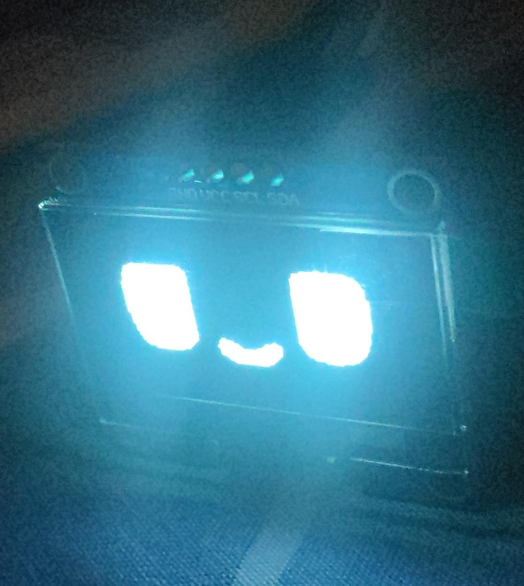

Domore (Robodesk)
Domore is a smart desk companion designed to accompany you while working on assignments or studying. It features various functions such as weather information, a digital clock, an interactive robot character, and a messaging feature that allows you to communicate with friends who also own a Domore device.
Robotics Embedded
Visit Repo GitHub